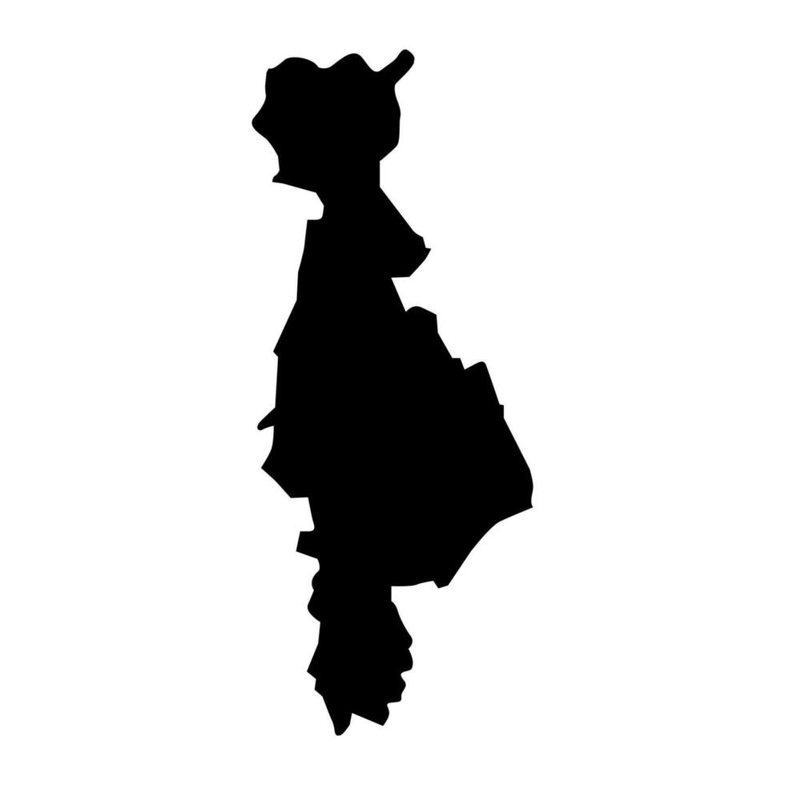

MAPA DE SAN VICENTE

Información
Aquí va la información general del departamento.
Datos Históricos
En esta sección puedes incluir los datos históricos del departamento.
Lista de Municipios
- Municipio 1
- Municipio 2
- Municipio 3
Centros Turísticos
Información sobre los centros turísticos más importantes del lugar.
Lagos
Descripción de los lagos más destacados en el departamento.
Ríos
Detalles sobre los ríos que atraviesan la región.
Volcanes
Información sobre los volcanes y su historia.
Personajes Célebres
Lista de personas importantes nacidas o relacionadas con la región.